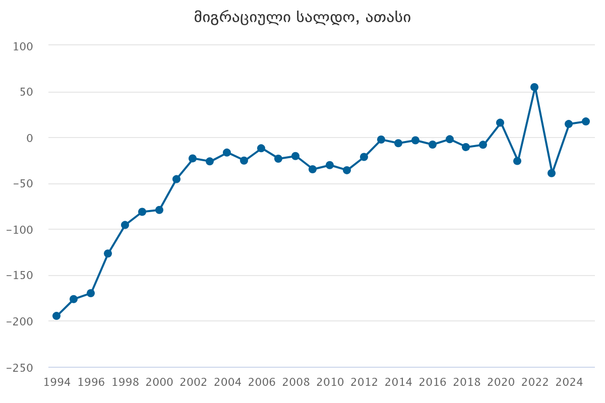

.png)
„მე ვარ ემიგრანტი“ გულისტკივილით ამბობენ ადამიანები. მათი ისტორიები, განვლილი გზა თუ მიზნები ერთმანეთისგან განსხვავდება, მაგრამ შინაარსი თითქოს მაინც ერთნაირია. ისინი ტოვებენ სამშობლოს, მშობლებს, საკუთარ კულტურას, ენას, უახლოეს მეგობრებს და ყველაფერს, რაც აქამდე იცოდნენ. ეს ყველაფერი კი მხოლოდ უკეთესი ხვალინდელი დღისთვის, იმ მომავლისთვის, რომელიც, მათივე თქმით, საქართველოში უბრალოდ არ ექნებოდათ.
საქართველოს უახლესი ისტორია, გადინების ისტორიაა. დღეს უკვე აღარ არსებობს ოჯახი, რომელსაც ერთი ემიგრანტი მაინც არ ჰყავს. მოქალაქეები მიდიან სამუშაოდ, სასწავლებლად, იმის საძებნელად, რასაც საკუთარ ქვეყანაში მოკლებულნი არიან და შემდეგ, ხშირად უკან აღარ ბრუნდებიან.
თუმცა, დღეს ამ დიდ ნაკადში ყველაზე საგანგაშო ტენდენცია გამოიკვეთა, ქვეყანას მისი ყველაზე პროდუქტიული ძალა, ახალგაზრდობა ტოვებს. მიდიან ისინი, ვისაც ქვეყნის ეკონომიკა, განათლება თუ მედიცინა უნდა ემართა. საქართველო ფაქტობრივად უახლეს და საუკეთესო თაობებს სხვა ქვეყნების ასაშენებლად თმობს.
.png)
.png)

2025 წლის საქსტატის მონაცების მიხედვით, ბოლო 6 წლის განმავლობაში საქართველო 780 ათასზე მეტმა მოქალაქემ დატოვა. თუმცა, კიდევ უფრო საგანგაშოა IDFI-ის სტატისტიკა, რომელიც ამ ნაკადის შიდა სტრუქტურას აშიშვლებს, ქვეყნიდან წასული მოქალაქეების 70% 30 წლამდე ასაკის პირები იყვნნენ. ორივე ეს ოფიციალური მონაცემი ერთად პირდაპირ ადასტურებს, რომ მიგრაციული ტალღა უპირველესად ქვეყნის ახალგაზრდა თაობას არტყამს. საქართველო მასობრივად იცლება იმ ადამიანებისგან, ვისაც მისი მომავალი უნდა შეექმნა, რაც იმას ნიშნავს, რომ ჩვენი ხვალინდელი დღე დღესვე ტოვებს საზღვრებს.
ამ მასობრივი პროცესის სოციალურ-ეკონომიკურ საფუძვლებს პირდაპირ აშიშვლებს 2026 წლის ივნისის სოციოლოგიური გამოკითხვის შედეგები, სადაც საქართველოს მოსახლეობამ მათ წინაშე არსებული ყველაზე კრიტიკული გამოწვევები დაასახელა. ქართველებისთვის უმთავრეს პრობლემად კვლავ უმუშევრობა (69%) და სიღარიბე (58%) რჩება. ამას ემატება დაბალი ხელფასები (57%), რაც იმას ნიშნავს, რომ დასაქმების შემთხვევაშიც კი, ადამიანებს უჭირთ ელემენტარული საჭიროებების დაკმაყოფილება. როდესაც ამ მძიმე ფონს თან ერთვის ჯანდაცვისა (42%) და განათლების (42%) სისტემური პრობლებების, ქვეყანაში დარჩენა გადარჩენისთვის ბრძოლად იქცევა.
შედეგად, 2025 წლის ოფიციალური მონაცემებით, ყველაზე აქტიური, შრომისუნარიანი ასაკის, 15-64 წლამდე ემიგრანტების რაოდენობა თითქმის 100 ათასს შეადგენს. პროცესის შეუქცევადობასა და საზოგადოებრივ ნიჰილიზმზე კი ყველაზე მძიმედ კიდევ ერთი ფაქტი მეტყველებს, 2025 წლის მონაცემებით, 1500 მოქალაქემდე შეუწყდა საქართველოს მოქალაქეობა. ეს ციფრები აღარ არის უბრალო მშრალი სტატისტიკა, ეს არის განაჩენი ქვეყნის დემოგრაფიული და სოციალური მომავლისთვის.
რა უბიძგებს ახალგაზრდებს ქვეყნის დატოვებისკენ? ნუთუ ერთ დღეს გადაწყვიტეს, რომ ამ ქვეყანაში ცხოვრება აღარ შეეძლო და სახლის სხვაგან ძებნა დაიწყეს? წასვლის მიზეზი ყველას თავისი აქვს, თუმცა ის რაზეც ყველა თანხმდება არის ის შეზღუდულობის გრძნობა, იქნება ეს ფინანსური, პოლიტიკური თუ სხვა. ყველა ახალგაზრდა გვიყვება იმ შეზღუდვებზე, რომლებსაც სამშობლოში ცხოვრებისას გრძნობდნენ: „ქვეყანა დავტოვე სექსუალური ორიენტაციისა და ანტისამთავრობო აქტივიზმის გამო, სიკვდილით მემუქრებოდნენ“ ამბობს ემიგრანტი ლუკას აბლოთია. წასვლის მიზეზად ხშირად სახელდება შესაძლებლობები, რომლებიც ახალგაზრდების თქმით, საქართველოში ლიმიტირებულია. მათ დატოვეს ქვეყანა უკეთესი მომავლისთვის, რომელსაც საკუთარ სამშობლოში ვერ ხედავდნენ.
ქვეყნიდან მიდიან უკეთესი ცხოვრების იმედით, თუმცა გზა უკეთესი ცხოვრებისკენ ეკლებით არის სავსე. მილიონი გამოწვევა, შიში, ნერვიულობა, რომელსაც ყველასგან შორს, სრულიად მარტო უმკლავდები. რჩები საკუთარ თავთან მარტო და ხვდები, რომ ოჯახი აქ ვეღარ დაგეხმარება, ამ ახალ ქვეყანაში შენ თვითონ უნდა იბრძოლო გადასარჩენად.
მომავლის იმედი ჰქონდა ესპანეთში ჩასულ გიორგის, რომელმაც რამდენიმე დღე ქუჩაში გაატარა, შემდეგ კი უცხო ადამიანის ავტოფარეხში ცხოვრობდა. მიუხედავად სირთულისა, მას საქართველოში ყოფნას, ესპანეთის ქუჩებში ძილი ერჩივნა. მან არ იცოდა რა მოელოდა წინ, თუმცა, ბედნიერი მომავლის იმედი არ დაუკარგავს.
ყველა ბავშვისთვის, სკოლის დასრულება უდიდესი ბედნიერებაა, თუმცა რა ხდება მაშინ, როცა 17-18 წლის ასაკში მე-9 კლასში გაბრუნებენ?
საქართველოში უნივერსიტეტში ჩაბარებას, მე-9 კლასში დაბრუნება არჩია იტალიაში ჩასულმა ქეთამ. ქეთას თქმით, იგი იტალიაში ჩავიდა ისე, რომ იტალიური საერთოდ არ ესმოდა, ეს იყო ერთ-ერთი მიზეზი სკოლაში დაბრუნებისა. კიდევ ერთ მიზეზად ქეთა ქართული და ევროპული განათლების სისტემების განსხვავებას ასახელებს. მისი თქმით, იტალიურ სკოლაში მიიღო ის განათლება, რომელსაც ვერასდროს მიიღებდა საქართველოში, ისწავლა ახალი ენა და საბოლოოდ, 4 წლის შემდეგ, 22 წლის ასაკში ჩააბარა უნივერსიტეტში.
მართალია დიდი სირთულეების ფასად, მაგრამ საბოლოოდ, ამ ეკლიანმა გზამ ემიგრანტებს, მაინც მოუტანა ნატვრილი ბედნიერება.
ემიგრანტები მიდიან, იცვლებიან, ვითარდებიან, თუმცა გულის სიღრმეში ყოველ დღე ფიქრობენ იმ ადამიანებზე, რომლებიც უკან დატოვეს. ენატრებათ, ენატრებათ დედები, ძმები, ბებიები, თუმცა იციან, რომ საკუთარი ბედნიერებისთვის ეს დისტანცია უნდა აიტანონ.
„წარმოუდგენელია ადამიანი ემიგრაციაში ჩამოსვლამდე რაც იყო, იგივე იყოს ემიგრაციაში გატარებული პერიოდის შემდეგ“ ამბობს ვახო სებისკვერაძე. მისი თქმით, ემიგრაცია არის ძლიერი დარტყმა იდენტობაზე.
იდენტობაზე დარტყმა ყველაზე მეტად ემიგრანტ ქეთა ცხოვრებაძეს აწუხებს, რომელსაც ქართული ნელ-ნელა ავიწყდება, თუმცა ამაზე საუბარი არ სურს, რადგან არ უნდა აღიაროს, რომ ენა, რომელზეც მთელი ცხოვრება ლაპარაკობდა, რომელსაც საყვარელი ადამიანებისგან ისმენდა, ახლა სრულიად სხვა, მისთვის უცხო, მაგრამ თან ნაცნობი ენით ჩანაცვლდება.
თეკო ცინცაძე ნიუ-იორკში კი პირიქით, ავრცელებს ქართულ კულტურას. მან ნიუ-იორკის ქუჩებს კიდევ ერთი საინტერესო, ქართული მაღაზია შემატა, სადაც ქართველები შედიან საქართველოს გასახსენებლად, ხოლო უცხოელები, ახალი კულტურის შესასწავლად.


ქეთას თბილისში 85 წლის ბებია ელოდება, რომელიც ყოველ დღე იმის მოლოდინშია, რომ მისი შვილიშვილი კარს შემოაღებს და ყვავილებს თავისი ხელით მოუტანს. თუმცა, ახლა ბებია კურიერის მიერ მიტანილი ყვავილებით ხარობს, რომლებიც შორიდან ქეთამ გამოაგზავნა. ბებიამ ხელი მოიტეხა, მაგრამ ქეთა ჩამოსვლას ვერ ახერხებს. იგი მძიმედ განიცდის შვილიშვილისგან შორს ყოფნას, მაგრამ გულს იმით იმშვიდებს, რომ ამბობს: „ქეთა ვერ იქნებოდა აქ ისეთივე ბედნიერი, როგორიც იქაა“.
„ეს რომ წავიდა საზღვარგარეთ, რასაც ჰქვია გულიდან მოვიგლიჯე“ ამბობს ბებია. იგი სევდით ათვალიერებს ძველ ფოტოებს, იხსენებს ბავშვობის ისტორიებს და იმ ამანათებს, რომლებსაც შვილიშვილს საზღვარგარეთ უგზავნის, გაზეთებში სათუთად გადახვეულ ყველს, ღერღილს, ჩურჩხელასა და ტყემალს. ასე ცდილობს, ქეთას საქართველოს გემო შეახსენოს. ახსენდება უცხოეთიდან მიღებული საჩუქრებიც, თუმცა იცის, რომ გულში არსებულ დიდ სიცარიელეს მხოლოდ შვილიშვილის დაბრუნება თუ შეავსებს. ლაპარაკობს, იღიმის, მაგრამ თვალები სევდით აქვს სავსე.
ახლა ბებია სხვა შვილიშვილების ემიგრაციაში გასამგზავრებლად ემზადება, თუმცა შინაგანად დარდობს, რომ მათ წასვლას, შესაძლოა, ვეღარც კი გაუძლოს.
„არსებობენ დედამიწელები, არსებობენ ყოველდღიურობისთვის დაბადებულნი... ხოდა ჩემი და დედამიწელია, აქ ვერ გაჩერდებოდა“ ამბობს თეკოს და, იაკო. სწორედ იაკო გახდა თეკოსთვის ბიძგი, რომ უკეთესი ცხოვრების საძიებლად ქვეყანა დაეტოვებინა. თუმცა, იაკო იხსენებს, რომ თავიდან თავს იდანაშაულებდა, განიცდიდა დის წასვლას და ნერვიულობდა, რადგან იცოდა, რომ თეკოს გადასახლების იდეა მას ეკუთვნოდა: „ერთი კვირა ტანსაცმელი არ გამოვიცვალე, მეგონა, თეკოს დავავიწყდებოდი...“ ამბობს იაკო. იგი იღიმის, თუმცა წამით თითქოს იმ მომენტში ბრუნდება, როდესაც ყველაზე მეტად ეშინოდა დის სამუდამოდ დაკარგვის.
თეკომ, რომელიც წლებია ემიგრაციაშია და, იაკოს თქმით, „ყველგან უცხოვრია, საკუთარი ქვეყნის გარდა“, ამერიკაში ჩასვლისას ურთულესი პერიოდი გამოიარა. დასაწყისში იგი მოხუცს უვლიდა, რომელიც ყოველ საღამოს ფურცლებს აქუცმაცებდა და თეკოს მოვალეობა ამ ნაკუწების გადათვლა იყო. მიუხედავად ამგვარი ფსიქოლოგიური და ფიზიკური სირთულეებისა, თეკო ამერიკაში დარჩა და საბოლოოდ იპოვა საკუთარი ბედნიერება.
ახლა კი იაკო უკვე მეორე დის ემიგრაციაში გასაცილებლად ემზადება. ეს უკანასკნელი საქართველოს შვილის ჯანმრთელობის პრობლემების გამო ტოვებს, ქვეყანაში ბავშვისთვის ადეკვატური სამედიცინო დახმარების გაწევა ვერ მოხერხდა. იაკო დარწმუნებულია: „საქართველოში მეოცნებე ადამიანების ადგილი არ არის“. ამიტომ, იგი შინაგანად უკვე შეეგუა იმ აზრს, რომ სამომავლოდ ქვეყნიდან მისი შვილებიც წავლენ.
ემიგრაციულ პროცესებზე საუბრისას შეუძლებელია გვერდი აუაროთ იმ პოლიტიკურ ნარატივს, რომელიც წლების განმავლობაში ქვეყნის შიგნით იცვლებოდა. 2012 წელს, ბიძინა ივანიშვილი საზოგადოებას ემიგრანტების მასობრივ შემოდინებასა და სამშობლოში დაბრუნებას ჰპირდებოდა. იგი აცხადებდა, რომ დაიწყებოდა ქართველების უკან მოდინება, რათა მათ საკუთარ მიწა-წყალზე ეცხოვრათ. მისი მთავარი გზავნილი მაშინ ერთმნიშვნელოვანი იყო: „ჩვენ უნდა დავიბრუნოთ ჩვენი ქართველი ერი“.
თუმცა, წლების შემდეგ ეს პოზიცია რადიკალურად შეიცვალა. უკვე 2019 წლის განცხადებებში ბიძინა ივანიშვილმა აღნიშნა, რომ ეიფორიულად არ უნდა ვიძახოთ, თითქოს უმუშევრობას ქვეყანაში სრულად აღმოვფხვრით ან ყველა ემიგრანტს უკან დავაბრუნებთ. ახალ სტრატეგიად კი სახელმწიფოს მხრიდან მოქალაქეების ადგილზე გადამზადება დასახელდა, რათა მათ ემიგრაში წასვლა და საზღვარგარეთ ლეგალურად დასაქმება შეძლონ. დაპირება, რომელიც თავიდან ხალხის სამშობლოში დაბრუნებას ისახავდა მიზნად, დროთა განმავლობაში წასვლისა და გადინების ხელშეწყობის პოლიტიკად იქცა.
ქვეყანაში არსებულ მიგრაციულ ტალღაზე საუბრისას, მნიშვნელოვანია იმ განცხადების შეფასებაც, რომლებიც საჯარო სივრცეში ისმის. მაგალითად, მმართველ გუნდთან ასოცირებული იდეოლოგი, ზაზა შათირიშვილი მიიჩნევს, რომ ახალგაზრდების ის ნაწილი, რომელიც ქვეყნის ეკონომიკისთვის „ზედმეტია“, ემიგრაციაში უნდა წავიდეს. ახალ თაობას (ჯენ ზის) შათირიშვილი უწოდებს გაუნათლებელს, მათ გაუნათლებლობას NGO-ებსა და ილიას სახელმწიფო უნივერსიტეტს აბრალებს: "ან უნდა გახდე "ნორმალური ადამიანი", ან უნდა დადებილდე". როდესაც ახალგაზრდები ისმენენ, რომ ისინი საკუთარ სამშობლოში „ზედმეტები“ არიან, ეს მათთვის დამატებითი ბიძგი ხდება, რომ ბარგი ჩაალაგონ და ქვეყნიდან წავიდნენ. მსგავსი ნარატივი ადამიანებში აძლიერებს განცდას, რომ აქ მათ მომავალი და რეალიზების შანსი უბრალოდ არ აქვთ.
2025 წლის ნოემბერში მიღებული გადაწყვეტილებით, ემიგრანტებს ეზღუდებათ ხმის მიცემა, ისინი არჩევნებში მონაწილეობისთვის ქვეყანაში უნდა დაბრუნდნენ. მთავრობის თქმით, „მათ 4 წელიწადში ერთხელ თავის საქართველოში შეუძლიათ [ჩამოსვლა].“
გარდა ამისა, „განათლების რეფორმა“, რომელიც მთავრობამ მიიღო, ხდება მიზეზი იმისა, რომ აბიტურიენტები პირდაპირ უცხოურ უნივერსიტეტებში აბარებენ. მსგავსი ცვლილებები ახალგაზრდების „გადინებას“ კიდევ უფრო უწყობს ხელს.
ემიგრანტ ლუკას აბლოთიას თქმით, სახელმწიფო სწორედ ამგვარი მიზანმიმართული ნაბიჯებით, ფაქტობრივად, „აიძულებს“ ახალგაზრდებს, რომ საქართველო დატოვონ. თუმცა, ქვეყნიდან წასვლა ბრძოლის შეწყვეტას არ ნიშნავს. ლუკასი იხსენებს, რომ ბრიუსელში ჩასვლისთანავე, იქ მყოფ სხვა ქართველ ემიგრანტებთან ერთად, საზღვრებს გარეთ აქტიურად აწყობდა საპროტესტო აქციებს და სამშობლოში მიმდინარე პროცესებს შორიდანაც კი ხმამაღლა უპირისპირდებოდა.
ამ მძიმე რეალობაზე გვიყვება ქეთა ცხოვრებაძეც, რომლის თქმითაც, მას დღეს იმის მატერიალური თუ ფიზიკური შესაძლებლობაც კი არ აქვს, რომ ოჯახის მოსანახულებლად ჩამოვიდეს საქართველოში, არათუ მხოლოდ არჩევნებში მონაწილეობის მისაღებად. შედეგად, მისი, როგორც ქვეყნის მოქალაქის ხმა, უბრალოდ იკარგება. სწორედ ამ უპერსპექტივობისა და უსამართლობის განცდის გამო, ქეთა აღარ ელოდება სამშობლოში უკეთესობისკენ ცვლილებებს და საკუთარ ოჯახის წევრებს მუდმივად მოუწოდებს, რომ საქართველოში დარჩენას, იტალიაში მასთან გადმოცხოვრება არჩიონ.
ამ კითხვაზე წამით თითქოს ყველას თვალები უბრწყინდებათ. ზოგს ეს იმედი არც უქრება სახიდან და მყისიერად მპასუხობენ: „კი! აუცილებლად!“. აი ზოგი კი... ზოგში ეს იმედი ძალიან მალე ქრება და მათ მზერაში მხოლოდ რეალობის სიმკაცრე რჩება: „არ დავბრუნდები“, „ვერ დავბრუნდები“, „საერთოდ არ განვიხილავ“.
ურთულესია დატოვო უკვე აწყობილი, სტაბილური ცხოვრება. თუნდაც მაშინ, როდესაც ფიზიკური შრომისგან ყოველი კუნთი გტკივა, ზუსტად იცი, რომ აქ ეს შრომა მაინც გიფასდება და ელემენტარული არსებობისთვის ბრძოლა არ გიწევს. სამშობლოს კი... სახლში შენს გაკეთებულსა და ნაშრომს ხშირად უბრალოდ არ დააფასებენ.
შემზარავია წახვიდე საკუთარი ქვეყნიდან, თუმცა დღეს, ბევრი ახალგაზრდისთვის, აქ დარჩენა კიდევ უფრო რთული აღმოჩნდა.